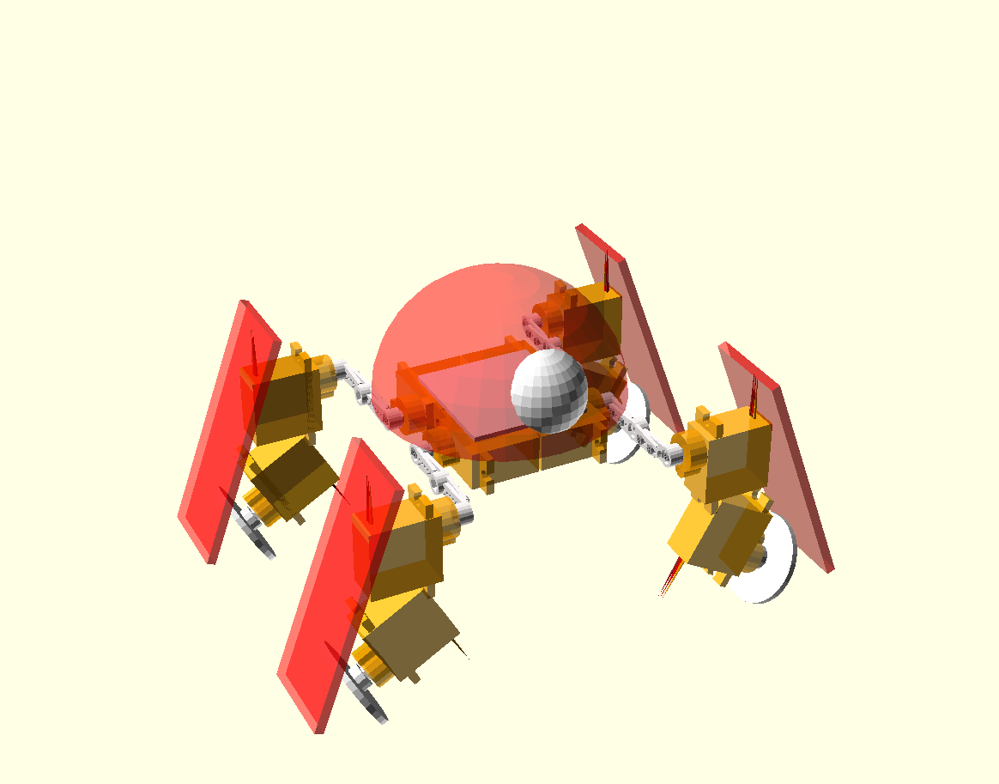

Spider Mode¶
Published on 2015-07-01 in Katka, a mammalian robot.
Yesterday I finally decided to kill one of my failed projects, the Pico-Kubik (pKubik for short). It was the third robot in the series, following µKubik quadruped robot . It was supposed to be smaller and cheaper by the virtue of only using 8 servos, 2 per each leg, and doing inverse kinematics through solving a complicated set of non-linear equations, for all legs at once. The idea was that while I can’t position accurately each leg in 3D with only 2 degrees of freedom per leg, I can do it if I use all the legs together, and ignore the position of the body itself. While I still think it may be doable, the complexity of required math defeated me, and the robot was standing there on the shelf, waiting for its turn.
So yesterday I decided to disassemble it, and reassemble into a younger sister of Katka, a mammalian robot . I’ve been complaining that Katka’s leg construction is sub-optimal and needs rebuilding, but since that requires physical changes, and I don’t have a version control system for the physical world, I was reluctant to break an otherwise perfectly fine robot. So now, with 8 spare servos to use, I could just build another Katka from scratch, but with a different leg configuration.
I also have this idea at the back of my mind, of building a working Logicoma model , that would look something like this:
As you can see, this is basically Katka, but with the legs a little more spread out, and with additional continuous-rotation servos for the wheels. The angled wheels would let it turn by moving the legs forward and backward. So, I needed to confirm that this configuration will indeed walk well, and maybe later add the wheels.
Anyways, here’s the robot walking:
One problem I had is that since the center of mass is much lower in this one, I needed to tilt the body sideways much further then in Katka to make sure the center of gravity moves far away from the leg being raised. I suppose that with the greater leg range that this configuration gives, I could also move the body forward and backward a little, to improve that. But generally I’m very happy with how it works.